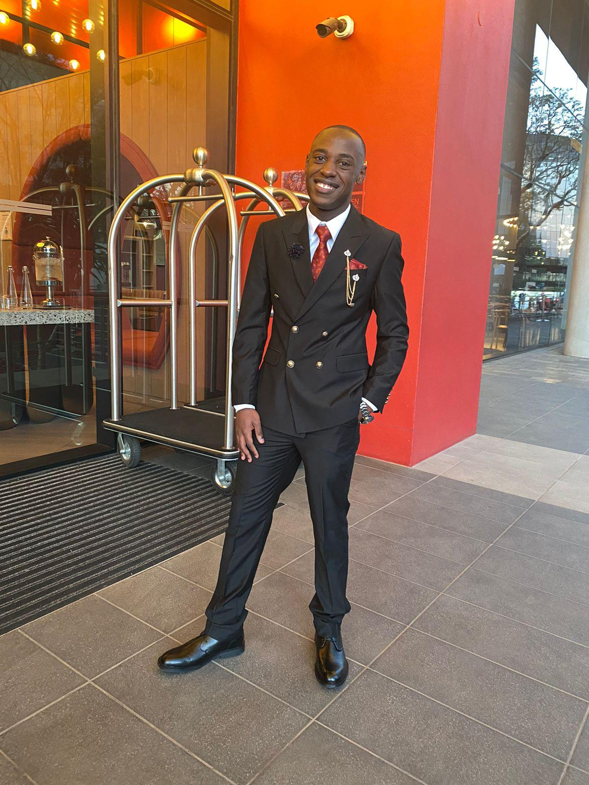

Full-Stack Developer | C++, Python & Web Developer | Turning Ideas into Scalable, Real-World Applications | Lifelong Learner & Problem Solver | Creating Digital Solutions with Clean, Maintainable Code
I design and develop modern, responsive websites and digital solutions tailored to real-world business needs.
I am a driven and detail-oriented software developer with a strong passion for building practical, scalable, and user-focused digital solutions. My interests span across web development, software engineering, and system design, with a strong emphasis on writing clean, maintainable, and efficient code.
I enjoy solving complex problems, working with databases, and transforming ideas into
functional systems. I am constantly learning new technologies, refining my skills, and
challenging myself through real-world projects. Whether working independently or as part
of a team, I value clear communication, thoughtful design, and delivering solutions that
create meaningful impact.
Developed an interactive console-based Hangman game in C++, focusing on string manipulation, input validation, and control flow. Implemented core game mechanics including word selection, letter guessing, limited attempts, and win/lose conditions. Emphasized clean code structure and user-friendly interaction.
Built a command-line Rock Paper Scissors game enabling user versus computer gameplay. Utilized random number generation for computer choices and implemented logic to determine outcomes and track results. Demonstrated strong understanding of conditional statements and program flow.
Created a fully functional Tic Tac Toe game in Python with a turn-based system and dynamic game board. Implemented win detection logic and input handling to ensure smooth gameplay. Focused on modular design and clear program structure to enhance readability and maintainability.
Developed a console-based Number Guessing Game in Python where the user attempts to guess a randomly generated number within a defined range. Implemented random number generation, input validation, and feedback mechanisms to guide the user (e.g., higher or lower hints). Demonstrated strong use of control structures, loops, and conditional logic, with a focus on creating an engaging and user-friendly experience.